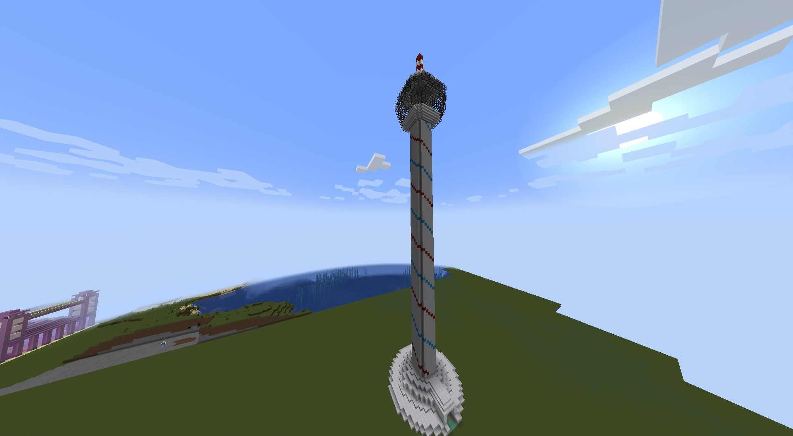
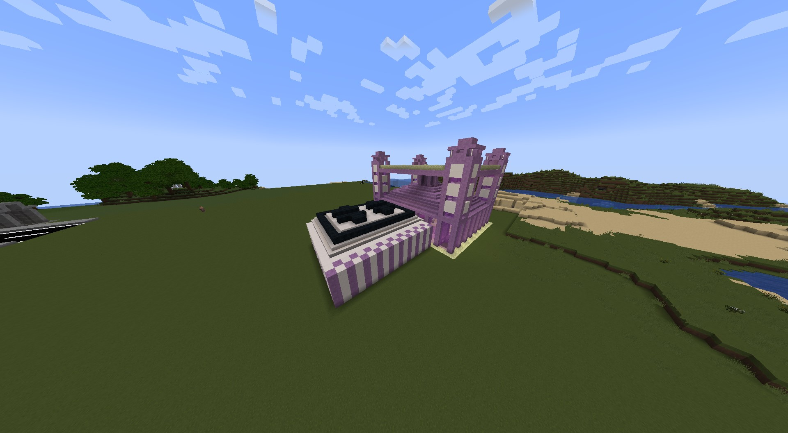
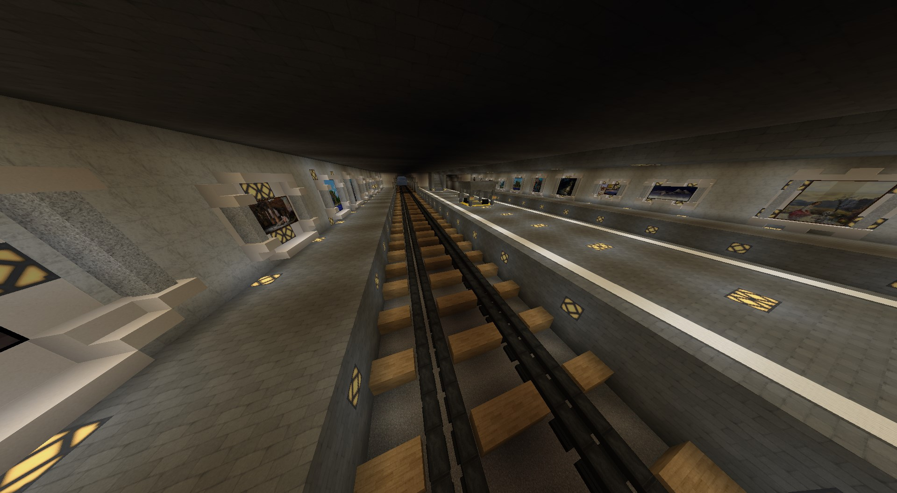
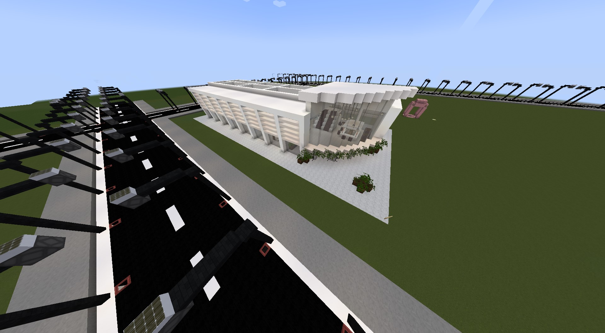
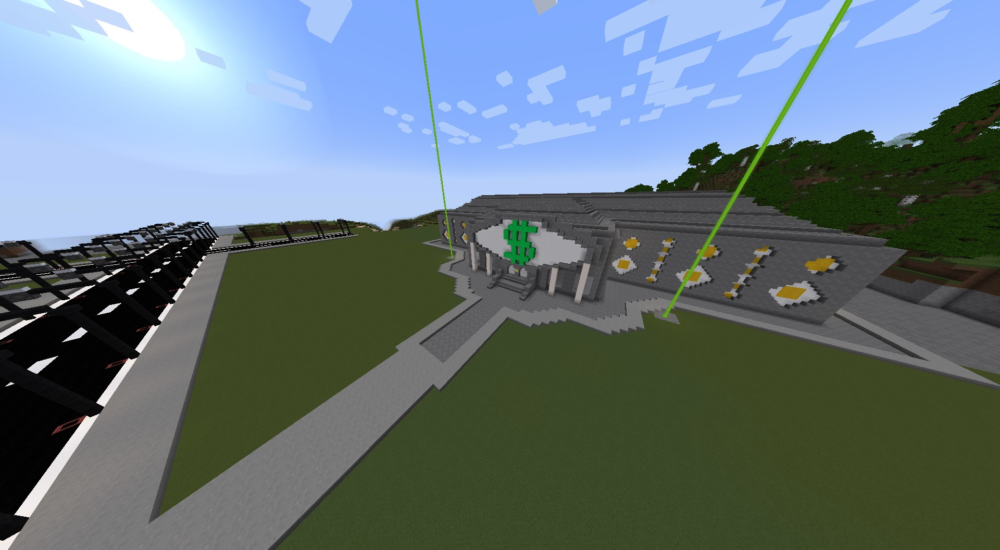
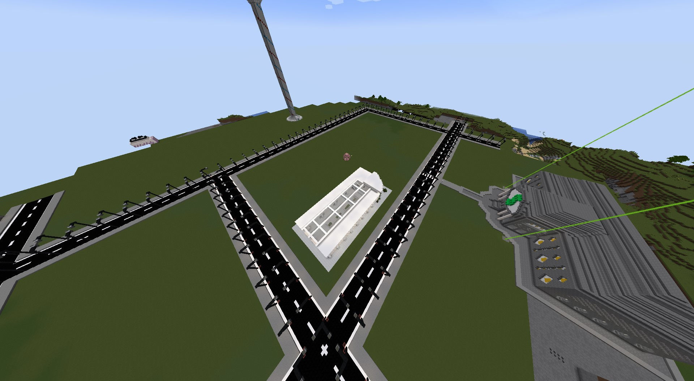

Über CityBloxs
Willkommen in CityBloxs! Unsere Stadt wächst stetig und bietet eine Vielzahl an Aktivitäten, die von den Spielern selbst gestaltet werden können. Entdecke die verschiedenen Bereiche und werde Teil unserer kreativen Community!
Galerie
Hier findest du eine Sammlung von Screenshots und Bildern aus CityBloxs. Schaut euch die verschiedenen Bauprojekte an, die von unseren Spielern erstellt wurden!






Minecraft-Features von CityBloxs
CityBloxs bietet spannende Funktionen, die das Spielerlebnis einzigartig machen und dir erlauben, kreativ zu werden und die Stadt zu gestalten. Hier sind einige der wichtigsten Features:
- Verschiedene Stadtteile zum Bauen: Entwerfe und baue in verschiedenen Stadtvierteln mit speziellen Regeln und Stilen, die den Flair der Stadt widerspiegeln.
- Interaktive Stadtprojekte: Arbeite mit anderen Spielern zusammen, um komplexe Bauprojekte wie öffentliche Gebäude, Parks und Märkte zu schaffen.
- Echtes Wirtschaftssystem: Baue dein Geschäft auf, verdiene Geld, handle mit anderen Spielern und investiere in Stadtentwicklungen.
- Regelmäßige Events und Herausforderungen: Nimm an aufregenden Events teil, die die Spieler herausfordern und spannende Belohnungen bieten.
- Bauvorschriften: Behalte die städtischen Bauvorschriften im Auge, um sicherzustellen, dass alle Gebäude gut zum Gesamtbild der Stadt passen und das Stadtbild nicht gestört wird.
- Benutzerdefinierte Gebäudevorlagen: Verwende vorgefertigte Templates und Bausteine, um deine eigenen Designs zu erstellen und schnell umzusetzen.
- Stadtverwaltung und Bürgerbeteiligung: Jeder Spieler kann sich aktiv an der Verwaltung der Stadt beteiligen, Vorschläge einbringen und Entscheidungen treffen, die den Verlauf der Stadtentwicklung beeinflussen.